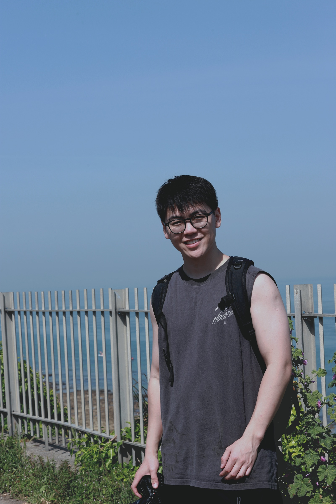

Photography notebook
Tai's Lens
A quiet place for photographs, field notes, and a little academic life in the background.

Photos
Selected frames
A first set of portraits, city nights, landscapes, and travel fragments.
About
Photography first. Economics quietly nearby.
Tai Wu is a PhD student in Economics at UCL, working around early childhood development, family economics, and visual measurement. This site is mostly a place to look at photographs.